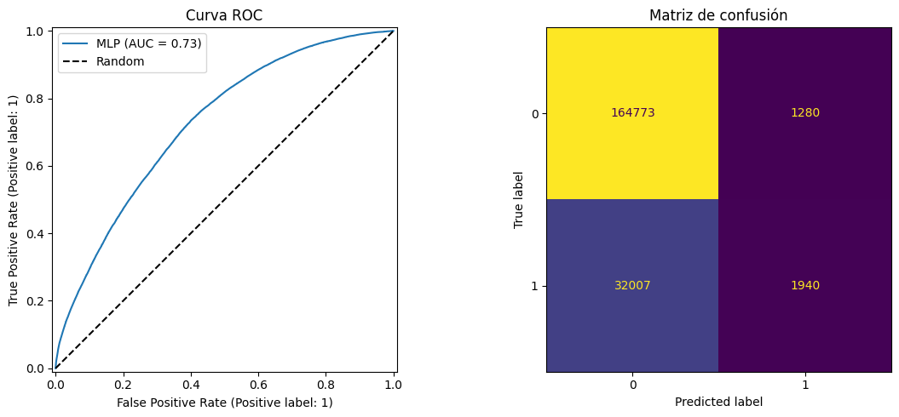
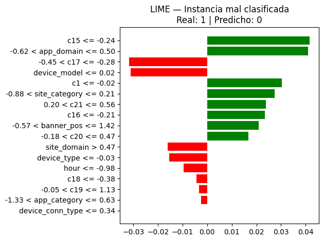

3. Modelado Scikit-Learn - Click-Through Rate#
Importación librerías#
Se importan las librerías necesarias para el modelado, se importan herramientas para división de datos y preprocesamiento.
import joblib
import numpy as np
import pandas as pd
import sklearn
import matplotlib.pyplot as plt
import os
import seaborn as sns
from sklearn.model_selection import train_test_split
import warnings
warnings.filterwarnings('ignore')
Carga Dataframes#
Se procede a cargar el dataframe resultante del análisis exploratorio, Adicionalmente, se estandarizan los nombres de las columnas reemplazando espacios por guiones bajos y convirtiendo todo a minúsculas, con el fin de facilitar su manipulación.
df = pd.read_csv(os.path.join(os.getcwd(), r'datos\train\train_sklearn_model.csv'))
df.columns = df.columns.str.replace(' ', '_').str.lower()
Observamos encabezado del dataframe#
print(df.head().to_string())
click hour c1 banner_pos site_domain site_category app_domain app_category device_model device_type device_conn_type c14 c15 c16 c17 c18 c19 c20 c21 año mes dia
0 0 19 1005 0 c4e18dd6 50e219e0 d9b5648e 0f2161f8 72a00661 1 0 20277 320 50 2281 3 47 100182 42 2014 10 23
1 0 13 1005 0 f3845767 28905ebd 7801e8d9 07d7df22 3bd9e8e7 1 0 15705 320 50 1722 0 35 -1 79 2014 10 24
2 0 5 1005 0 f3845767 28905ebd 7801e8d9 07d7df22 1f0bc64f 1 0 20108 320 50 2299 2 1327 100084 52 2014 10 28
3 0 11 1005 0 c4e18dd6 50e219e0 2347f47a 0f2161f8 421872ab 1 0 20170 300 50 2312 0 167 100079 16 2014 10 29
4 0 20 1005 0 c4e18dd6 50e219e0 2347f47a 0f2161f8 8e39e528 1 2 22955 320 50 2655 2 38 -1 23 2014 10 28
Separación tipo de variables y eliminación de variables innecesarias#
Se realiza una separación de las variables según su tipo y se procede a eliminar aquellas que no aportan valor predictivo al modelo. En particular, se descartan las columnas c14, año, mes y dia.
df = df.drop(columns=['c14', 'año', 'mes', 'dia'])
Seleccionamos aquellas variables útiles para el modelado.
var_anon = ['c1','c15','c16','c17','c18','c19','c20','c21']
var_cat = ['device_model', 'site_domain', 'app_domain', 'app_category','site_category','banner_pos','device_type','device_conn_type', 'hour']
df.shape
(1000000, 18)
print(df.head().to_string())
click hour c1 banner_pos site_domain site_category app_domain app_category device_model device_type device_conn_type c15 c16 c17 c18 c19 c20 c21
0 0 19 1005 0 c4e18dd6 50e219e0 d9b5648e 0f2161f8 72a00661 1 0 320 50 2281 3 47 100182 42
1 0 13 1005 0 f3845767 28905ebd 7801e8d9 07d7df22 3bd9e8e7 1 0 320 50 1722 0 35 -1 79
2 0 5 1005 0 f3845767 28905ebd 7801e8d9 07d7df22 1f0bc64f 1 0 320 50 2299 2 1327 100084 52
3 0 11 1005 0 c4e18dd6 50e219e0 2347f47a 0f2161f8 421872ab 1 0 300 50 2312 0 167 100079 16
4 0 20 1005 0 c4e18dd6 50e219e0 2347f47a 0f2161f8 8e39e528 1 2 320 50 2655 2 38 -1 23
Observamos tipos de datos por variable.
df.dtypes
click int64
hour int64
c1 int64
banner_pos int64
site_domain object
site_category object
app_domain object
app_category object
device_model object
device_type int64
device_conn_type int64
c15 int64
c16 int64
c17 int64
c18 int64
c19 int64
c20 int64
c21 int64
dtype: object
Conversión variables categóricas#
Se convierten las variables categóricas y anónimas al tipo str para garantizar que sean tratadas adecuadamente como variables categóricas durante el proceso de codificación.
for var in var_anon+var_cat:
df[var] = df[var].astype('str')
df.dtypes
click int64
hour object
c1 object
banner_pos object
site_domain object
site_category object
app_domain object
app_category object
device_model object
device_type object
device_conn_type object
c15 object
c16 object
c17 object
c18 object
c19 object
c20 object
c21 object
dtype: object
Agrupar categorías con pocas instancias#
Procedemos a agrupar categorías en aquellas variables de alta cardinalidad.
df.nunique()
click 2
hour 24
c1 7
banner_pos 7
site_domain 2856
site_category 22
app_domain 201
app_category 27
device_model 5134
device_type 5
device_conn_type 4
c15 8
c16 9
c17 422
c18 4
c19 67
c20 164
c21 60
dtype: int64
Establecemos un umbral de 5000 observaciones para agrupar categorías poco frecuentes, lo que representa menos del 0.005% del total de registros. La agrupación se aplica sobre las tres variables con mayor cardinalidad: device_model, site_domain, c17.
for var in ['device_model', 'site_domain', 'c17']:
freq = df[var].value_counts()
rare = freq[freq < 5000].index
df[var] = df[var].replace(rare, 'OTHER')
Observamos el resultado de la agrupación.
df.nunique()
click 2
hour 24
c1 7
banner_pos 7
site_domain 25
site_category 22
app_domain 201
app_category 27
device_model 37
device_type 5
device_conn_type 4
c15 8
c16 9
c17 51
c18 4
c19 67
c20 164
c21 60
dtype: int64
Separación variables predictoras - variable objetivo#
Se separa el conjunto de datos en variables predictoras y variable objetivo. La variable click es asignada a y como target, mientras que el resto de las columnas se almacenan en X como features para el modelado.
X = df.drop('click', axis=1)
y = df['click']
Encabezado conjunto de entrenamiento#
X.head()
| hour | c1 | banner_pos | site_domain | site_category | app_domain | app_category | device_model | device_type | device_conn_type | c15 | c16 | c17 | c18 | c19 | c20 | c21 | |
|---|---|---|---|---|---|---|---|---|---|---|---|---|---|---|---|---|---|
| 0 | 19 | 1005 | 0 | c4e18dd6 | 50e219e0 | d9b5648e | 0f2161f8 | OTHER | 1 | 0 | 320 | 50 | 2281 | 3 | 47 | 100182 | 42 |
| 1 | 13 | 1005 | 0 | f3845767 | 28905ebd | 7801e8d9 | 07d7df22 | 3bd9e8e7 | 1 | 0 | 320 | 50 | 1722 | 0 | 35 | -1 | 79 |
| 2 | 5 | 1005 | 0 | f3845767 | 28905ebd | 7801e8d9 | 07d7df22 | 1f0bc64f | 1 | 0 | 320 | 50 | 2299 | 2 | 1327 | 100084 | 52 |
| 3 | 11 | 1005 | 0 | c4e18dd6 | 50e219e0 | 2347f47a | 0f2161f8 | OTHER | 1 | 0 | 300 | 50 | OTHER | 0 | 167 | 100079 | 16 |
| 4 | 20 | 1005 | 0 | c4e18dd6 | 50e219e0 | 2347f47a | 0f2161f8 | OTHER | 1 | 2 | 320 | 50 | OTHER | 2 | 38 | -1 | 23 |
Encabezado variable de interés#
y.head()
0 0
1 0
2 0
3 0
4 0
Name: click, dtype: int64
Separación conjunto Train - Test#
Se divide el conjunto de datos en entrenamiento (80%) y prueba (20%) utilizando train_test_split. Se emplea el parámetro stratify=y para mantener la misma proporción de la variable objetivo en ambos conjuntos, asegurando que la distribución de clicks y no clicks sea representativa.
X_train, X_test, y_train, y_test = train_test_split(X, y, test_size=0.2, stratify=y, random_state=42)
X_train.shape
(800000, 17)
Modelado Scikit-Learn#
Preprocesamiento de variables#
Utilizamos Target Encoding para las variables anónimas y categóricas (var_anon y var_cat). Se emplea el parámetro smooth='auto' para suavizar las estimaciones en categorías con pocas observaciones.
from sklearn.compose import ColumnTransformer
from sklearn.preprocessing import StandardScaler
from sklearn.preprocessing import TargetEncoder
preprocessor = ColumnTransformer(
transformers=[
('target_enc', TargetEncoder(smooth='auto'), var_anon+var_cat)
]
)
Pipeline#
from sklearn.pipeline import Pipeline
from sklearn.neural_network import MLPClassifier
from sklearn.base import clone
mlp = MLPClassifier(
random_state=42
)
mlp = MLPClassifier(random_state=42)
pipe = Pipeline([
('prep', preprocessor),
('scaler', StandardScaler()),
('model', mlp)
])
Tuning Hiperparámetros#
Se define un grid de hiperparámetros para optimizar el MLPClassifier:
model__hidden_layer_sizes: Arquitectura de la red neuronal, probando una capa oculta con 50 y 100 neuronas, y dos capas ocultas con 100 y 50 neuronas respectivamente.model__alpha: Parámetro de regularización para controlar el sobreajuste, evaluando valores de 0.0001, 0.001 y 0.01.model__max_iter: Número máximo de iteraciones para el entrenamiento, probando con 50 y 100 épocas.
param_grid = {
'model__hidden_layer_sizes': [(50,), (100,), (100, 50)],
'model__alpha': [0.0001, 0.001, 0.01],
'model__max_iter': [50, 100]
}
GridSearch#
from sklearn.metrics import roc_auc_score
from sklearn.model_selection import GridSearchCV
grid = GridSearchCV(
pipe,
param_grid,
scoring='roc_auc',
cv=5,
n_jobs=-1,
verbose=1
)
Se configura una búsqueda en malla utilizando GridSearchCV para encontrar la combinación óptima de hiperparámetros:
pipe: Pipeline previamente definido que incluye preprocesamiento y modelo.
param_grid: Conjunto de hiperparámetros a evaluar definido anteriormente.
scoring='roc_auc': Métrica de evaluación basada en el área bajo la curva ROC, adecuada para problemas de clasificación binaria con posibles desbalances.
cv=5: Validación cruzada de 5 particiones para evaluar cada combinación.
n_jobs=-1: Utiliza todos los núcleos disponibles para acelerar el proceso.
verbose=1: Muestra el progreso de la búsqueda durante la ejecución.
Entrenamiento#
import time
start_train = time.time()
grid.fit(X_train, y_train)
train_time = time.time() - start_train
print(f"Tiempo de entrenamiento: {train_time:.1f}s")
Fitting 5 folds for each of 18 candidates, totalling 90 fits
Tiempo de entrenamiento: 1801.6s
Se registra el tiempo de entrenamiento del modelo para evaluar su costo computacional. La búsqueda con GridSearchCV ajusta 5 folds para cada uno de los 18 candidatos, totalizando 90 fits. El proceso completo tomó 1801.6 segundos, equivalentes a aproximadamente 30 minutos.
Test y métricas#
model_num = grid.best_estimator_
y_pred = grid.predict(X_test)
y_prob = grid.predict_proba(X_test)[:, 1]
from sklearn.metrics import classification_report, confusion_matrix, roc_auc_score
print("Mejor configuración:", grid.best_params_)
print("\nAUC:", roc_auc_score(y_test, y_prob))
print("\nReporte de clasificación:")
print(classification_report(y_test, y_pred))
print("\nMatriz de confusión:")
print(confusion_matrix(y_test, y_pred))
Mejor configuración: {'model__alpha': 0.0001, 'model__hidden_layer_sizes': (100, 50), 'model__max_iter': 100}
AUC: 0.7250403049453604
Reporte de clasificación:
precision recall f1-score support
0 0.84 0.99 0.91 166053
1 0.60 0.06 0.10 33947
accuracy 0.83 200000
macro avg 0.72 0.52 0.51 200000
weighted avg 0.80 0.83 0.77 200000
Matriz de confusión:
[[164773 1280]
[ 32007 1940]]
from sklearn.metrics import RocCurveDisplay, ConfusionMatrixDisplay
fig, axes = plt.subplots(1, 2, figsize=(12, 5))
RocCurveDisplay.from_predictions(
y_test, y_prob,
ax=axes[0],
name='MLP'
)
axes[0].set_title('Curva ROC')
axes[0].plot([0, 1], [0, 1], 'k--', label='Random')
axes[0].legend()
ConfusionMatrixDisplay.from_predictions(
y_test, y_pred,
ax=axes[1],
colorbar=False
)
axes[1].set_title('Matriz de confusión')
plt.tight_layout()
plt.show()

La mejor configuración encontrada por GridSearchCV corresponde a una arquitectura de dos hidden layer con 100 y 50 neuronas respectivamente
alpha: 0.0001Iteraciones máximas: 100
Rendimiento general:
AUC: 0.725, indicando una capacidad predictiva moderada para distinguir entre clases.
Análisis por clase:
Clase 0 (no click): Excelente desempeño con precisión de 0.84 y recall de 0.99, logrando identificar correctamente casi todos los no clics.
Clase 1 (click): Desempeño pobre, con recall de solo 0.06. Esto significa que el modelo detecta únicamente el 6% de los clics reales, aunque cuando predice un clic, acierta en el 60% de los casos (precisión 0.60).
Matriz de confusión:
Verdaderos negativos: 164,773Falsos positivos: 1,280Falsos negativos: 32,007Verdaderos positivos: 1,940
El modelo presenta un claro desbalance en su rendimiento, inclinándose fuertemente hacia la clase mayoritaria (no click). El bajo recall en clicks indica que el modelo no está logrando capturar bien los patrones de la clase minoritaria, posiblemente por la naturaleza poco común de los clicks o porque las variables no logran discriminarlo adecuadamente.
Interpretabilidad con LIME#
Para generar explicaciones locales e interpretables de las predicciones del modelo, se inicializa el explanador LIME para datos tabulares. Esta herramienta permite desglosar predicciones individuales identificando el aporte específico de cada variable en un instancia particular, facilitando la transparencia del modelo y la validación de sus criterios de decisión.
import lime
import lime.lime_tabular
import numpy as np
import matplotlib.pyplot as plt
best_model = grid.best_estimator_
prep = best_model.named_steps['prep']
scaler = best_model.named_steps['scaler']
mlp_model = best_model.named_steps['model']
X_train_transformed = scaler.transform(prep.transform(X_train))
X_test_transformed = scaler.transform(prep.transform(X_test))
def predict_fn(data):
return mlp_model.predict_proba(data)
y_pred_array = np.array(y_pred)
y_test_array = np.array(y_test)
idx = 8
print(f"Índice: {idx}")
print(f"Valor real: {y_test_array[idx]}")
print(f"Valor predicho: {y_pred_array[idx]}")
Índice: 8
Valor real: 1
Valor predicho: 0
En el anterior código extraemos los componentes del pipeline entrenado, de ese pipeline se extraen las tres etapas por separado, el preprocesador (TargetEncoder), el scaler (StandardScaler), y el modelo MLP. Posteriormente, se aplica el TargetEncoder con prep.transform(X_train) que convierte las variables categóricas a numéricas, y luego scaler.transform() que estandariza esos valores. Por último, predict_fn es una función que LIME va a llamar internamente para obtener probabilidades de la instancia, además, seleccionamos la instancia número 8 del conjunto test para evaluar las características que influyen en la clasificación erronea.
explainer = lime.lime_tabular.LimeTabularExplainer(
training_data=X_train_transformed,
feature_names=var_anon+var_cat,
class_names=['no click', 'click'],
mode='classification',
random_state=42
)
explanation = explainer.explain_instance(
data_row=X_test_transformed[8],
predict_fn=predict_fn,
num_features=20
)
fig = explanation.as_pyplot_figure()
plt.title(f"LIME — Instancia mal clasificada\nReal: {y_test_array[idx]} | Predicho: {y_pred_array[idx]}")
plt.tight_layout()
plt.show()

Interpetación#
La mayoría de features empujaban en la dirección correcta (colores verdes). c15 <= -0.24 y app_domain con valores entre -0.62 y 0.50 son las que más fuerza tenían hacia predecir click, seguidas de c1, site_category, c16, c21, banner_pos y c20 con contribuciones moderadas.
Solo dos features empujaron de manera significativa en la predicción equivocada, pero con bastante fuerza: c17 con valores -0.45 y -0.28, y device_model <= 0.02. Estas dos features fueron suficientemente influyentes para que el modelo ignorara todas las señales verdes y predijera no click.